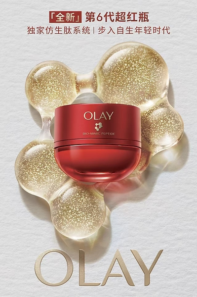
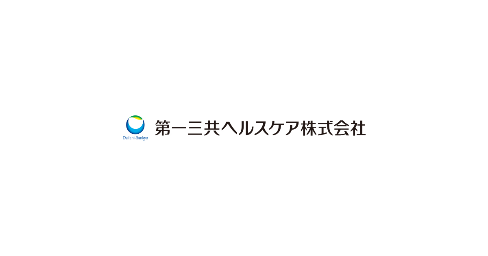

#1监管与合规
国内
《化妆品安全通用要求》获批发布，2028年起实施
市场监管总局（国家标准委）于8月6日发布强制性国家标准《化妆品安全通用要求》（GB 7916—2026）。标准将于2028年1月1日正式实施；1987年发布的《化妆品卫生标准》届时同步废止。新标准覆盖通用安全、原料、产品，以及包装材料、标签、贮存运输和标准实施等要求。
信号判断：实施窗口较长，但品牌、原料商与代工厂需要前置梳理配方、包材、标签和质量体系的衔接事项；新品立项中的合规审视将更早进入开发和供应链协同。
国内
市场监管总局（国家标准委）于8月6日发布强制性国家标准《化妆品安全通用要求》（GB 7916—2026）。标准将于2028年1月1日正式实施；1987年发布的《化妆品卫生标准》届时同步废止。新标准覆盖通用安全、原料、产品，以及包装材料、标签、贮存运输和标准实施等要求。
信号判断：实施窗口较长，但品牌、原料商与代工厂需要前置梳理配方、包材、标签和质量体系的衔接事项；新品立项中的合规审视将更早进入开发和供应链协同。
国内
8月6日，香料企业格林生物披露首次公开发行股票并在创业板上市的发行工作安排。公司已获中国证监会同意注册，拟发行不超过3,333.3334万股；公开披露材料显示，募集资金拟投入年产6,300吨高档香料项目及补充流动资金，拟使用募集资金6.90亿元。
信号判断：高档香料的本土化供给能力正在获得资本支持。后续应关注该项目的量产节奏、重点香料品类和客户结构，判断其对供应稳定性、定制效率及成本结构的实际影响。
国内
OLAY于8月4日在上海举行第6代超红瓶发布会，并在8月6日通过新闻稿对外确认新品传播。品牌宣布宋茜出任全球品牌代言人；新品围绕不同肤质推出四款面霜，并以“P3专研胜肽”为核心产品叙事。
信号判断：发布会与代言人同步绑定，强化了OLAY在抗老面霜赛道的沟通集中度。四款面霜的分肤质设计，将功效表达进一步落到质地和使用感的差异化；后续可观察线上首发、专柜陈列及不同版本的主推资源分配。


国际｜英国及爱尔兰
e.l.f. Cosmetics与Bubble的限量联名系列于8月6日在Boots.com及英国、爱尔兰门店开售。系列包含三款双腔产品：将Bronzing Drops与保湿霜组合的Drop N’ Dunk、唇膏与唇部精华组合的Glow Talk，以及液体腮红与透明质酸精华组合的Camo Slide；品牌随后安排8月7日美国官网上线、8月9日进入Target。
信号判断：首轮零售落点选择Boots，表明品牌先在药妆零售渠道测试“护肤成分+彩妆”的组合产品，再进入美国自营与Target网络。后续的陈列、补货和复购将决定跨品类联名能否从话题性产品转为常规货架机会。
国际｜日本
第一三共健康护理旗下敏感肌品牌Minon AminoMoist于8月6日在日本上市「Essence Cleansing Oil」卸妆油。企业公告显示，该产品用于卸除浓妆和毛孔污垢，强调厚实油膜带来的低摩擦使用感；官方产品页显示规格为120mL。
信号判断：Minon将温和保湿的产品逻辑延伸至油类卸妆，覆盖敏感肌用户对清洁力与洗后舒适度的双重需求。该品类补位有助于把品牌的水乳、精华等护理步骤连接为更完整的日常流程。
